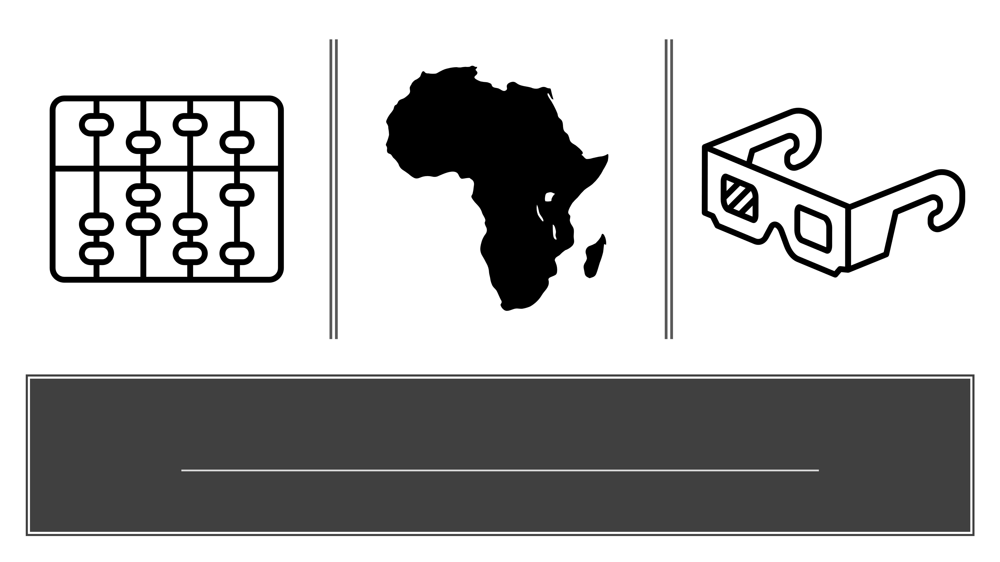
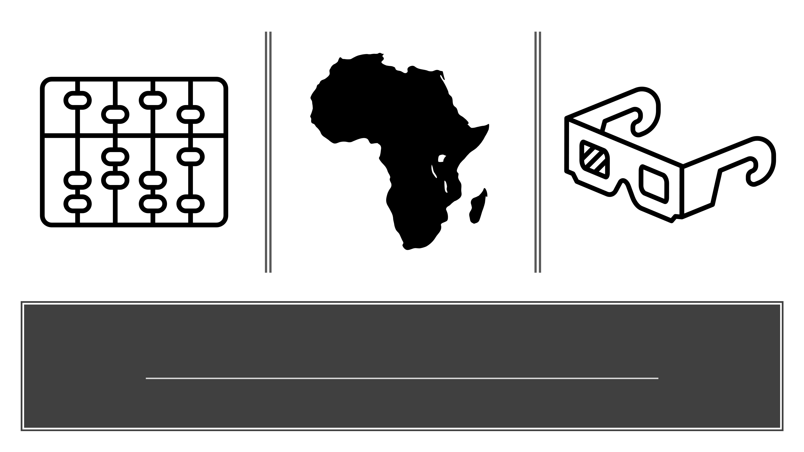

James Mercer Langston Hughes (February 1, 1901[1] – May 22, 1967) was an American poet, social activist, novelist, playwright, and columnist from Joplin, Missouri. One of the earliest innovators of the then-new literary art form called jazz poetry, Hughes is best known as a leader of the Harlem Renaissance. He famously wrote about the period that "the Negro was in vogue", which was later paraphrased as "when Harlem was in vogue."[2]
Growing up in a series of Midwestern towns, Hughes became a prolific writer at an early age. He moved to New York City as a young man, where he made his career. He graduated from high school in Cleveland, Ohio and soon began studies at Columbia University in New York City. Although he dropped out, he gained notice from New York publishers, first in The Crisis magazine, and then from book publishers and became known in the creative community in Harlem. He eventually graduated from Lincoln University. In addition to poetry, Hughes wrote plays, and short stories. He also published several non-fiction works. From 1942 to 1962, as the civil rights movement was gaining traction, he wrote an in-depth weekly column in a leading black newspaper, The Chicago Defender.